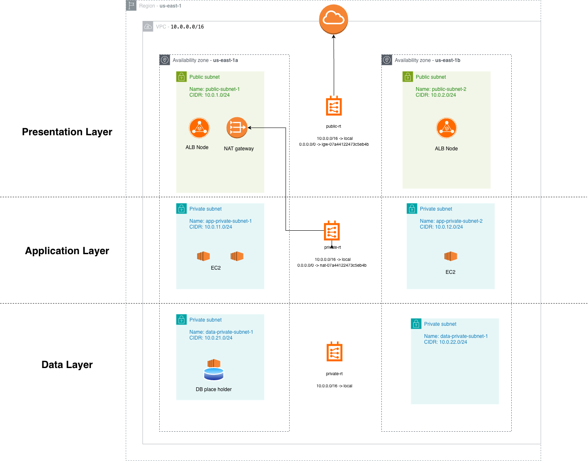
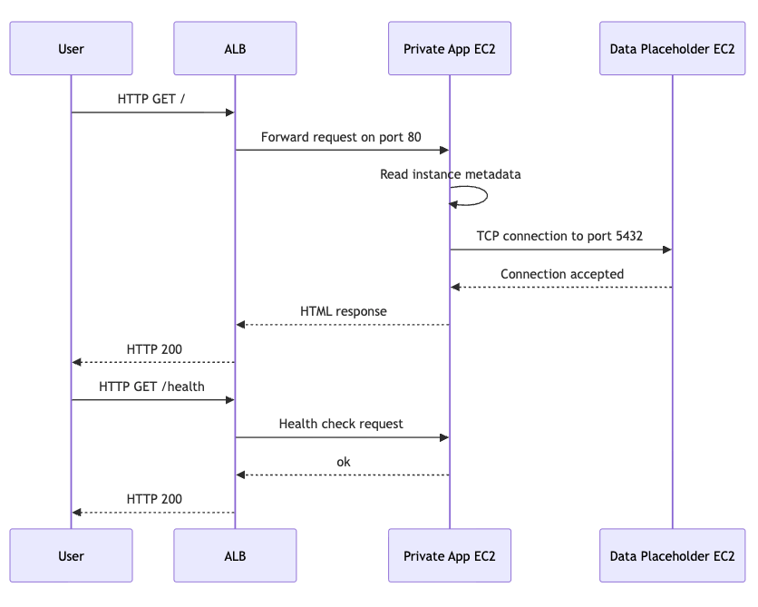
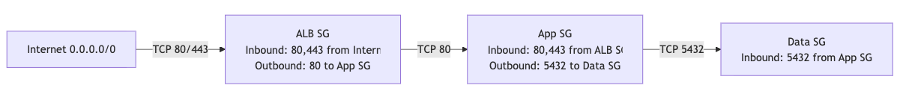

Diagram, tier purpose, traffic flow, design choices.
ALB URL, instance rotation, health endpoint, isolation test.
Monthly estimate, cost controls, savings opportunities.
Issues encountered and how they were solved.
Production improvements, scale, limitations.


/health and return ok.
5432 only from the app security group./health and show ok.20 requests were distributed across all three app instances.
The ALB removed the stopped instance and kept serving traffic.
| Item | Estimate | Note |
|---|---|---|
| 4 t3.micro EC2 instances | $30.37/month | Before Free Tier |
| 32 GB gp3 EBS | $2.56/month | Before Free Tier |
| 1 NAT Gateway | $32.85/month | Largest fixed cost |
| 1 Application Load Balancer | $16.43/month | Before LCU usage |
| Fixed subtotal | $82.21/month | Before traffic based charges |
| Planning range | $80-$100/month | Low traffic demo estimate |
Fixed monthly subtotal from EC2, EBS, NAT Gateway hourly, and ALB hourly costs.
Planning range with a small buffer for usage based charges.
For this demo, the main cost is not traffic. The main fixed cost is the NAT Gateway hourly charge.